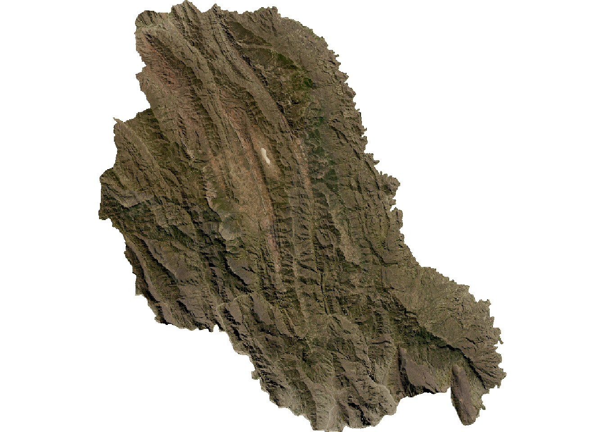
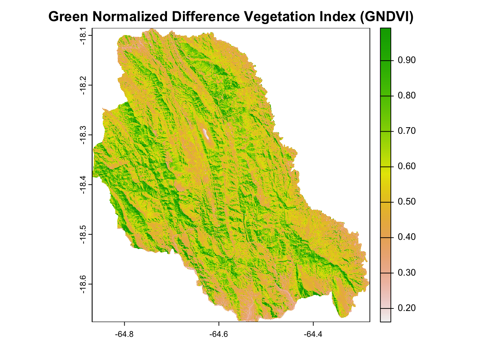
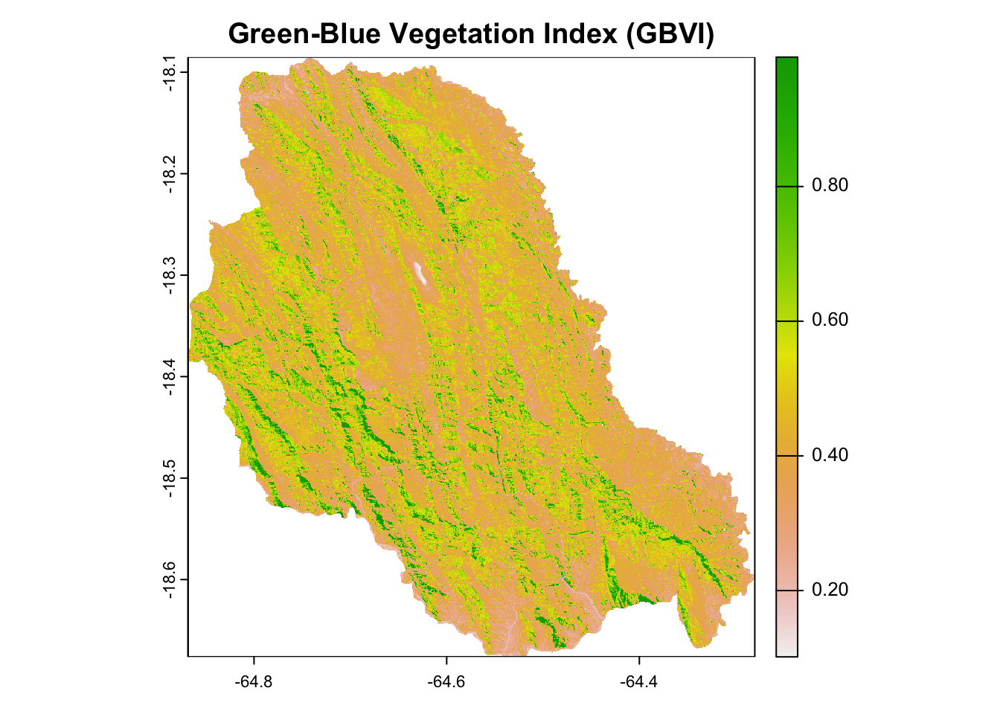
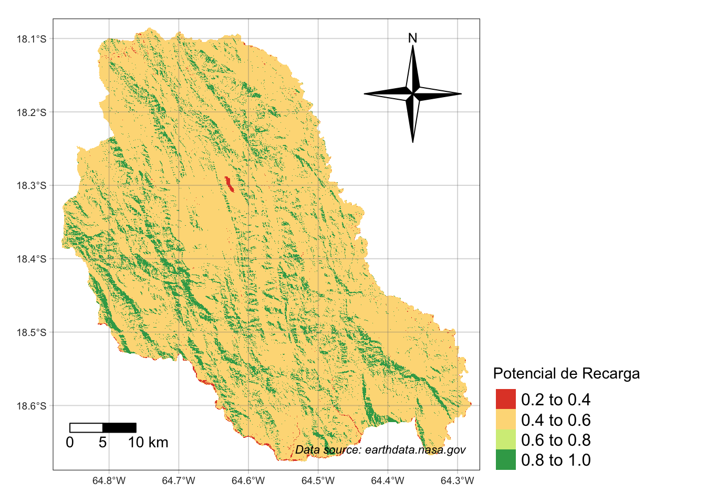
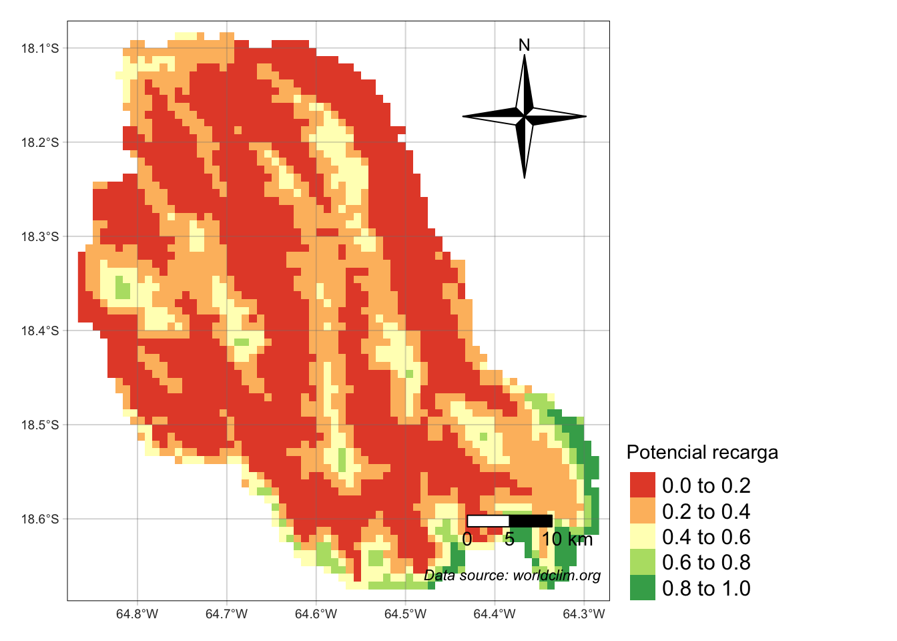
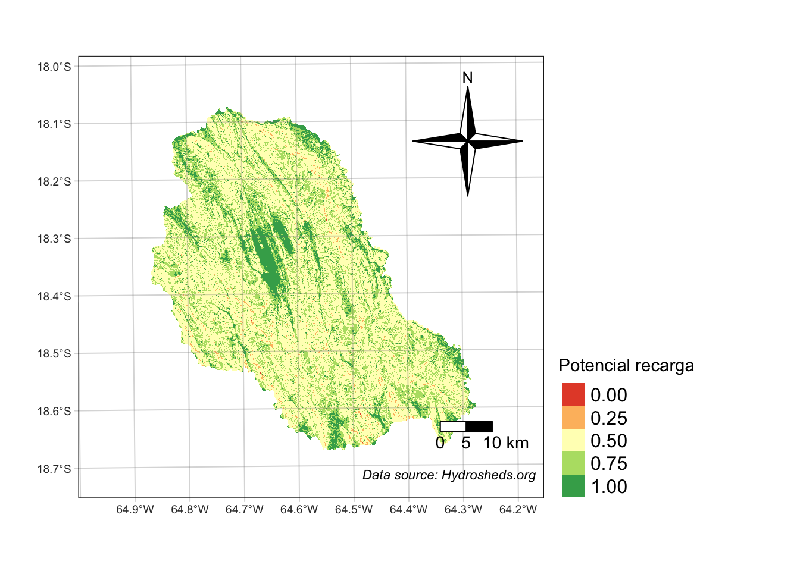

Code
# libraries used
library(raster)
library(terra)
library(ggplot2)
library(tmap)
library(sf)
library(dplyr)
library(tibble)
library(knitr)
library(rmapshaper)Working in the R-Studio Environment. The following Packages have been used to accomplish the final Results and have provided the necessary functions for the calculations conducted.
# libraries used
library(raster)
library(terra)
library(ggplot2)
library(tmap)
library(sf)
library(dplyr)
library(tibble)
library(knitr)
library(rmapshaper)The Following Data has been used:
# Read data
## shapes
bol <- read_sf("gadm41_BOL_3.dbf", crs=4326) # Pasorapa extent
# pasorapa <- read_sf("pasorapa.shp", crs = 4326)
# Variables
# cob_uso <- read_sf("cob_uso.shp")
fis_suelos <- read_sf("fis_suelos.shp")
# used
dsmw_intersect <- read_sf("suelos_fao.shp")
geologia <- read_sf("geologia.shp", crs = 4326)
# TIF
# precipitacion
precip <- rast("sum_raster_pasorapa.tif")
# dem
dem <- rast("mna_pasorapa.tif")
# Land Use (sealed data)
land <- rast("Change_10S_070W.tif")# Read Satelite Raster Image
# sat_image <- rast("snapshot-2023-07-30T00_00_00Z.tif")
# sat_image_1 <- rast("snapshot-2023-07-31T00_00_00Z.tif")
### Data Processing
pasorapa <- bol %>% filter(NAME_3 == "Pasorapa")
# Satelite Picture
## crop and mask sat
# sat_image <- terra::crop(sat_image_1, pasorapa)
# sat_image_mask_1 <- mask(sat_image, pasorapa)
#
# # segundo
# sat_image_crop <- terra::crop(sat_image, pasorapa)
# sat_image_mask <- mask(sat_image_crop, pasorapa)
# sat_image_mask[sat_image_mask == 0] <- NA
#
# sat_image_mask_1[sat_image_mask_1 == 0] <- NA
# sat_full <- terra::merge(sat_image_mask, sat_image_mask_1)
# writeRaster(sat_full, "sat_full.tiff")
sat_full <- rast("sat_full.tiff")
plotRGB(sat_full)
# Band Calc
# Set Color Bands
blue_band <- sat_full[[2]] # Replace 4 with the index of the Red band
red_band <- sat_full[[3]] # Replace 4 with the index of the Red band
green_band <- sat_full[[4]] # Replace 4 with the index of the Red band
# nir_band <- sat_full[[3]]
# Calculation for NDVI
# ndvi = (nir_band - red_band)/(nir_band + red_band)
# Plot the "NDVI"
# plot(ndvi)
# Calculate GNDVI
gndvi <- (green_band - red_band) / (green_band + red_band)
# Plot the GNDVI
plot(gndvi, main = "Green Normalized Difference Vegetation Index (GNDVI)")
# EVI-like index
# Define coefficients
G <- 2.5
L <- 1.0
C1 <- 6
C2 <- 7.5
# Calculate EVI-like index
evi_like <- G * ((red_band - blue_band) / (red_band + (C1 * blue_band) - (C2 * red_band) + L))
# Plot the EVI-like index
# plot(evi_like, main = "EVI-like Index (using Red and Blue bands)")
# Calculate GBVI
gbvi <- (green_band - blue_band) / (green_band + blue_band)
# Plot the GBVI
plot(gbvi, main = "Green-Blue Vegetation Index (GBVI)")
# Reclass
# Create a tibble with the reclassification table
reclass_table_indice <- tribble(
~from, ~to, ~becomes,
0, 0.2, 0.2,
0.2, 0.4, 0.4,
0.4, 0.6, 0.6,
0.6, 1, 1
)
# Reclassify the slope raster based on the reclassification table
gbvi_reclassified <- terra::classify(gbvi, reclass_table_indice, include.lowest = TRUE, right = TRUE)
# change name
names(gbvi_reclassified) <- "Potencial de Recarga"
# check
tmap_mode("plot")
tm_shape(gbvi_reclassified, labels = "New Legend Label") +
tm_raster(style = "pretty", palette = "RdYlGn") +
tm_scale_bar(breaks = c(0, 5, 10), text.size = 0.9, position = c("left")) +
tm_compass(type = "4star", size = 6, position = c("right", "top")) +
tm_credits("Data source: earthdata.nasa.gov", fontface = "italic", align = "left") + tm_graticules(alpha = 0.3) +
tm_layout(
legend.text.size = 1,
legend.position = c("left", "bottom"),
legend.outside = TRUE
)
# Raster data
## terra::terrain function
terrain <- terrain(dem)
# sealed land data
## crop and mask dem
land_crop <- terra::crop(land, pasorapa)
land_mask <- mask(land_crop, pasorapa)
# Vector data
# GEO
# crop and mask geo
sf_use_s2(FALSE) # quick fix
geologia_intersect <- sf::st_intersection(geologia, pasorapa)
st_crs(pasorapa) <- st_crs(4326) # 4326 is the EPSG code for WGS84# Simplify the geometries by a specified tolerance (adjust the tolerance as needed)
empty_raster <- raster(extent(fis_suelos), resolution = c(0.01, 0.01))
# Convert SIMBOLO to factor
fis_suelos$SUELOS <- as.factor(fis_suelos$SUELOS)
# Rasterize
fis_suelos_raster <- rasterize(fis_suelos, empty_raster, field = "SUELOS")
# Alternatives
simplified_data <- ms_simplify(cob_uso_polygons, keep = 0.1) # Adjust 'keep' value
cob_uso_polygons <- st_cast(cob_uso, "GEOMETRY")
# writeRaster(geo_raster, "geo_raster.tif", overwrite=TRUE)
# vis
# plot(geo_raster)# Creating the reclass_table_fao dataframe with the soil use descriptions
reclass_table_fis_suelos <- data.frame(
Soil_Use = c(
"Productivo Agropecuario, Extractivo Forestal: Pastoreo, Ramoneo, Cultivos alimenticios en algunos sectores, Extracción de Leña en parte",
"Productivo Agropecuario: Pastoreo, en sectores Cultivos alimenticios",
"Productivo Ganadero: Escaso pastoreo directo, en sectores extracción de sal de cocina en pequeña escala",
"Productivo: Alimenticios de consumo, subsistencia y mercado local.",
"Productivo Ganadero: Pastoreo directo, forrajeo de aves.",
"Extractivo Minero en parte: Explotación de yacimientos mineros; Por sectores escaso pastoreo directo",
"Productivo Aguas Superficiales Mixto: Generación de energía eléctrica Agua para riego, Pesca, Captación de Agua potable, Transporte Fluvial",
"Productivo Agropecuario: Cultivos alimenticios, Pastoreo directo en pequeña escala",
"Extractivo Minero, Productivo Agropecuario, Protectivo, Vida silvestre",
"Recreativo: Escénico, Turístico",
"Productivo Agropecuario, Extractivo Forestal y Petrolero: Cultivos Alimenticios, Pastoreo directo por sectores, Productos Maderables y no Maderables, Extracción de Combustibles fósiles"
)
)
# Adding arbitrary permeability values based on the provided soil use descriptions
reclass_table_fis_suelos$Permeability <- c(0.6, 0.8, 0.4, 0.7, 0.6, 0.3, 0.9, 0.7, 0.5, 0.8, 0.6)
# Displaying the updated table with permeability values
kable(reclass_table_fis_suelos)| Soil_Use | Permeability |
|---|---|
| Productivo Agropecuario, Extractivo Forestal: Pastoreo, Ramoneo, Cultivos alimenticios en algunos sectores, Extracción de Leña en parte | 0.6 |
| Productivo Agropecuario: Pastoreo, en sectores Cultivos alimenticios | 0.8 |
| Productivo Ganadero: Escaso pastoreo directo, en sectores extracción de sal de cocina en pequeña escala | 0.4 |
| Productivo: Alimenticios de consumo, subsistencia y mercado local. | 0.7 |
| Productivo Ganadero: Pastoreo directo, forrajeo de aves. | 0.6 |
| Extractivo Minero en parte: Explotación de yacimientos mineros; Por sectores escaso pastoreo directo | 0.3 |
| Productivo Aguas Superficiales Mixto: Generación de energía eléctrica Agua para riego, Pesca, Captación de Agua potable, Transporte Fluvial | 0.9 |
| Productivo Agropecuario: Cultivos alimenticios, Pastoreo directo en pequeña escala | 0.7 |
| Extractivo Minero, Productivo Agropecuario, Protectivo, Vida silvestre | 0.5 |
| Recreativo: Escénico, Turístico | 0.8 |
| Productivo Agropecuario, Extractivo Forestal y Petrolero: Cultivos Alimenticios, Pastoreo directo por sectores, Productos Maderables y no Maderables, Extracción de Combustibles fósiles | 0.6 |
The following FAO Soil Type Data available at fao.com contains Shapes in five different Categories. These have been assigned to a certain degree of Permeability of Water in (%). The Reclassification has been processed according to these values.
# Create an empty raster to rasterize into
empty_raster <- raster(extent(dsmw_intersect), resolution = c(0.001, 0.001))
# Convert SIMBOLO to factor
dsmw_intersect$FAOSOIL <- as.factor(dsmw_intersect$FAOSOIL)
# Rasterize
dsmw_raster <- rasterize(dsmw_intersect, empty_raster, field = "FAOSOIL")
# writeRaster(geo_raster, "geo_raster.tif", overwrite=TRUE)
# reclass
# Create a tibble with the reclassification table
reclass_table_fao <- tribble(
~from, ~to, ~becomes,
1, 1, 1,
1, 2, 0.6,
2, 3, 0.6,
3, 4, 0.4,
)
# Reclassify the slope raster based on the reclassification table
fao_reclassified <- reclassify(dsmw_raster, reclass_table_fao, include.lowest = TRUE, right = TRUE)
# Align Vegetation-Raster
fao_reclassified <- rast(fao_reclassified)
# Adding a new column C to the data frame
reclass_table_fao$Class <- c("Permo-Carboniferous one Tertiary elastic rocks", "Paleozoic elastic rocks", "Devonian clastic rocks", "Ordovician-Silurian and Devonian clastic rocks")
reclass_table_fao$FAOSOIL <- c("Bk2-b ", "I-Bd-Bh-c", "Lc2-3b", "Lc6-c")
kable(reclass_table_fao)
dsmw_intersect %>%
ggplot(aes(fill = FAOSOIL)) +
geom_sf()
# check
tmap_mode("plot")
tm_shape(fao_reclassified, labels = "New Legend Label") +
tm_raster(style = "pretty", palette = "RdYlGn") +
tm_scale_bar(breaks = c(0, 5, 10), text.size = 0.9) +
tm_compass(type = "4star", size = 6, position = c("right", "top")) +
tm_credits("Data source: fao.org", fontface = "italic", align = "left") + tm_graticules(alpha = 0.3) +
tm_layout(
legend.text.size = 1,
legend.position = c("left", "bottom"),
legend.outside = TRUE
)The following Data by worldclim.org resembles Precipitation Data on a 30 Arc Second Accuracy. The format provides one Raster-Layer for each month. The following Loop has been written in order to facilitate the Casting process.
The following 12 Raster-Layers have been summed to ensure we have one Raster for further classification. The Result is one Raster-Layer that contains the complete Precipitation of the average year from 1970-2000.
# Create a tibble with the reclassification table
reclass_table_precip <- tribble(
~from, ~to, ~becomes,
650, Inf, 1, # 650 to Inf becomes 1
600, 650, 0.75, # 600 to 650 becomes 0.75
550, 600, 0.5, # 550 to 600 becomes 0.5
500, 550, 0.25, # 500 to 550 becomes 0.25
-Inf, 500, 0 # -Inf to 500 becomes 0
)
# Assuming you have a slope raster 'slope_raster'
# Reclassify the slope raster based on the reclassification table
precip_reclassified <- classify(precip, reclass_table_precip, include.lowest = TRUE, right = TRUE)
kable(reclass_table_precip)| from | to | becomes |
|---|---|---|
| 650 | Inf | 1.00 |
| 600 | 650 | 0.75 |
| 550 | 600 | 0.50 |
| 500 | 550 | 0.25 |
| -Inf | 500 | 0.00 |
# change name
names(precip_reclassified) <- "Potencial recarga"
tmap_mode("plot")
tm_shape(precip_reclassified, labels = "New Legend Label") +
tm_raster(style = "pretty", palette = "RdYlGn") +
tm_scale_bar(breaks = c(0, 5, 10), text.size = 0.9) +
tm_compass(type = "4star", size = 6, position = c("right", "top")) +
tm_credits("Data source: worldclim.org", fontface = "italic", align = "right") + tm_graticules(alpha = 0.3) +
tm_layout(
legend.text.size = 1,
legend.position = c("left", "bottom"),
legend.outside = TRUE)
The following Geology data contains Shapes in six different Categories. The Categories has been assigned to a certain degree of Permeability in (%). The Reclassification has been processed according to these values.
# ggplot(geo_intersect, aes(fill = SIMBOLO)) +
# geom_sf()
# Create an empty raster to rasterize into
empty_raster <- raster(extent(geo_intersect), resolution = c(0.0008333333, 0.0008333333))
# Convert SIMBOLO to factor
geo_intersect$SIMBOLO <- as.factor(geo_intersect$SIMBOLO)
# Rasterize
geo_raster <- raster::rasterize(geo_intersect, empty_raster, field = "SIMBOLO", fun = mean)
# writeRaster(geo_raster, "geo_raster.tif", overwrite=TRUE)
# vis
# plot(geo_raster)
# reclass
# Create a tibble with the reclassification table
reclass_table_geo <- tribble(
~from, ~to, ~becomes,
1, 1, 0.2, # C - Crystalline: "C" could represent crystalline rocks or materials, often associated with igneous or metamorphic formations.
1, 2, 0.4, # D - Deposits or Duricrust:"D" might stand for specific deposits or duricrust, which is a hard layer formed on the ground by cementation.
2, 3, 1, # K - Karst: "K" might be used to denote karst terrain, which is characterized by soluble bedrock, such as limestone, and features like caves and sinkholes.
3, 4, 0.4, # Q - Quarternary: "Q" could represent a geological or environmental classification related to the Quaternary period.
4, 5, 0.8, # O - Organic or Overburden: "O" could be associated with organic materials or overburden, referring to unconsolidated material covering bedrock.
5, 6, 0.8, # S - Sedimentary: In geological or environmental contexts, "S" might represent sedimentary rocks or materials.
)
# Assuming you have a slope raster 'slope_raster'
# Reclassify the slope raster based on the reclassification table
geo_reclassified <- reclassify(geo_raster, reclass_table_geo, include.lowest = TRUE, right = TRUE)
# Align Vegetation-Raster
geo_reclassified <- rast(geo_reclassified)
# Adding a new column C to the data frame
reclass_table_geo$Class <- c("Crystalline", "Deposits or Duricrust", "Karst", "Quarternary", "Organic or Overburden", "Sedimentary")
kable(reclass_table_geo)
# check
tmap_mode("plot")
tm_shape(geo_reclassified, labels = "New Legend Label") +
tm_raster(style = "pretty", palette = "RdYlGn") +
tm_scale_bar(breaks = c(0, 5, 10), text.size = 0.9) +
tm_compass(type = "4star", size = 6, position = c("right", "top")) +
tm_credits("Data source: geo.gob.bo", fontface = "italic", align = "right") + tm_graticules(alpha = 0.3) +
tm_layout(
legend.text.size = 1,
legend.position = c("left", "bottom"),
legend.outside = TRUE
)The following Vegetation data contains Shapes in four different Categories. The Vegetation has been categorized into a certain degree of Permeability in (%). The Reclassification has been processed according to these values.
# Create an empty raster to rasterize into
empty_raster <- raster(extent(se_bo_geo_intersect), resolution = c(0.0008333333, 0.0008333333))
# Rasterize
veg_bol <- rasterize(se_bo_geo_intersect, empty_raster)
# writeRaster(veg_bol, "veg_bol.tif")
# plot(veg_bol)
# View(veg_bol)
# reclass
# Create a tibble with the reclassification table
reclass_table_veg <- tribble(
~from, ~to, ~becomes,
1, 3, 1, # Bosques freatófitos / Phreatophytische Wälder
3, 5, 0.8, # Bosques xerofíticos interandinos y subandinos / Inter- und subandine xerophytische Wälder
5, 11, 0.4, # matorral pluvial montano / montanes Pluvialgebüsch
11, 14, 0.2, # matorral pluvial montano pastizal montano altimontano / altimontanes montanes Grasland
)
# Assuming you have a slope raster 'slope_raster'
# Reclassify the slope raster based on the reclassification table
veg_reclassified <- reclassify(veg_bol, reclass_table_veg, include.lowest = TRUE, right = TRUE)
# Align Vegetation-Raster
veg_spatraster <- rast(veg_reclassified)
# Adding a new column C to the data frame
reclass_table_veg$Class <- c("Bosques freatófitos", "Bosques xerofíticos interandinos y subandinos", "matorral pluvial montano", "pastizal montano altimontano")
# test and print
kable(reclass_table_veg)
# check
tmap_mode("plot")
tm_shape(veg_spatraster, labels = "New Legend Label") +
tm_raster(style = "cat", palette = "RdYlGn") +
tm_scale_bar(breaks = c(0, 5, 10), text.size = 0.9) +
tm_compass(type = "4star", size = 6, position = c("right", "top")) +
tm_credits("Data source: geo.gob.bo", fontface = "italic", align = "right") + tm_graticules(alpha = 0.3) +
tm_layout(
legend.text.size = 1,
legend.position = c("left", "bottom"),
legend.outside = TRUE
)The following Digital elevation model (DEM) contains Raster-Values from min value 1231 to the max value 3450. The Data has been transformed into Slope by the Function: terra::terrain. The Slope-Data has been categorized according to Ernesto et al. (2021) into a certain degree of Permeability in (%). The Reclassification has been processed according to these values.
# Create a tibble with the reclassification table
reclass_table_dem <- tribble(
~from, ~to, ~becomes,
0, 6, 1, # Class 1: Plano a casi plano
6, 15, 0.75, # Class 2: Moderadamente ondulado
15, 45, 0.5, # Class 3: Ondulado/cóncavo
45, 65, 0.25, # Class 4: Escarpado
65, Inf, 0 # Class 5: Fuertemente escarpado
)
# Assuming you have a slope raster 'slope_raster'
# Reclassify the slope raster based on the reclassification table
dem_reclassified <- classify(terrain, reclass_table_dem, include.lowest = TRUE, right = TRUE)
# Adding a new column C to the data frame
reclass_table_dem$Class <- c("Plano a casi plano", "Moderadamente ondulado", "Ondulado/cóncavo", "Escarpado", "Fuertemente escarpado")
kable(reclass_table_dem)| from | to | becomes | Class |
|---|---|---|---|
| 0 | 6 | 1.00 | Plano a casi plano |
| 6 | 15 | 0.75 | Moderadamente ondulado |
| 15 | 45 | 0.50 | Ondulado/cóncavo |
| 45 | 65 | 0.25 | Escarpado |
| 65 | Inf | 0.00 | Fuertemente escarpado |
# change name
names(dem_reclassified) <- "Potencial recarga"
tmap_mode("plot")
tm_shape(dem_reclassified, labels = "New Legend Label") +
tm_raster(style = "cat", palette = "RdYlGn") +
tm_scale_bar(breaks = c(0, 5, 10), text.size = 0.9) +
tm_compass(type = "4star", size = 6, position = c("right", "top")) +
tm_credits("Data source: Hydrosheds.org", fontface = "italic", align = "right") + tm_graticules(alpha = 0.3) +
tm_layout(
legend.text.size = 1,
legend.position = c("left", "bottom"),
legend.outside = TRUE
)
The final Raster Calculation is being conducted according to the following table.
# Align resolutions (resample veg)
veg_resampled <- resample(veg_spatraster, dem_reclassified)
# Align resolutions (resample geo)
geo_reclassified <- resample(geo_reclassified, veg_resampled)
# Align resolutions (resample land)
land_reclassified <- resample(land_reclassified, geo_reclassified)
# Align resolutions (resample land)
precip_reclassified <- resample(precip_reclassified, land_reclassified)
# Align resolutions (resample land)
fao_reclassified <- resample(fao_reclassified, precip_reclassified)
# final calc
# raster_final <- (dem_reclassified + veg_resampled + geo_reclassified + land_reclassified + precip_reclassified) / 5
# ZR (zona de recarga) = [0.27*(Pend)+0.23*(Ts)+0.12*(Tr)+0.25*(Cve)+0.13* (Us)]
# final_raster = 0.345*(dem_reclassified)+0.19*(geo_reclassified)+0.32*(veg_resampled)+0.2*(land_reclassified) + (precip_reclassified)
# Adjusted weights
weight_dem <- 0.25
weight_geo <- 0.1
weight_veg <- 0.15
weight_land <- 0.15
weight_precip <- 0.2
weight_fao <- 0.15
# Perform the adjusted weighted combination
final_raster <- weight_dem * dem_reclassified +
weight_geo * geo_reclassified +
weight_veg * veg_resampled +
weight_land * land_reclassified +
weight_precip * precip_reclassified +
weight_fao * fao_reclassified
# Define the weights and data
weights <- c(0.25, 0.1, 0.15, 0.15, 0.2, 0.15)
data_names <- c("DEM", "Geology", "Vegetation", "Land Use", "Precipitation", "Soil Type by the FAO")
# Create the table
table_data <- data.frame(Weight = weights, Data = data_names)
# Show the table
kable(table_data)The following Map shows the potential of water-recharge across Aiquile according to the previous settings and classificacions in four different Classes: “Very low”, “low”, “Moderate” and “High”.
# Define breaks and labels for the reclassification
breaks <- c(0, 0.7, 0.75, 0.8, 1)
labels <- c("Muy baja", "Baja", "Moderata", "Alta")
# Cut the raster values into categorical factors
factor_raster <- cut(values(final_raster), breaks = breaks, labels = labels, include.lowest = TRUE)
# Use dplyr's recode to change the factor levels based on the breaks and labels
factor_raster <- factor_raster %>%
recode("Muy baja" = "Alta", "Baja" = "Moderata", "Moderata" = "Baja", "Alta" = "Muy baja")
# change name
names(final_raster) <- "Potencial de Recarga"
# Create a new raster with categorized values
r_categorized <- final_raster
values(r_categorized) <- as.character(factor_raster)
# view
tmap_mode("plot")
tm_shape(r_categorized, labels = "New Legend Label") +
tm_raster(style = "cont", palette = "RdYlGn", breaks = breaks, labels = labels) +
tm_scale_bar(breaks = c(0, 5, 10), text.size = 0.9, position = c("left")) +
tm_compass(type = "4star", size = 6, position = c("right", "top")) +
tm_credits("Author: Johannes Quente", fontface = "italic", align = c("left")) + tm_graticules(alpha = 0.3) +
tm_layout(
legend.text.size = 1,
legend.position = c("left", "bottom"),
legend.outside = TRUE
)This interactive Map shows only the higher values (> 0.7) including the values: “low”, “moderate” and “high” with different maps in the backround provided by openstreetmap.org.
# void map
new_raster <- final_raster
new_raster[new_raster < 0.7] <- NA
# map transparent final
tmap_mode("view")
tm_shape(new_raster) +
tm_raster(palette = "YlGn", style = 'cont', alpha = 0.8) +
tm_basemap(c("Esri.WorldImagery", "OpenStreetMap.Mapnik")) +
tm_minimap()